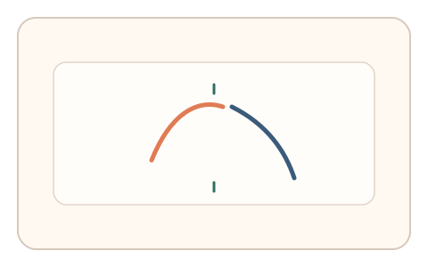
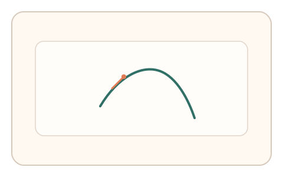
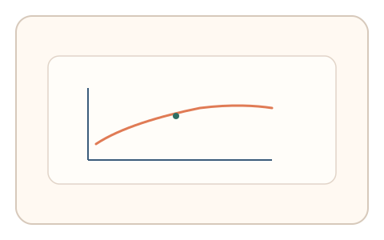

#40
视觉思考范式：时域/适应/残影
已扩展
视觉暂留拼合
快速呈现互补轮廓并短间隔切换，利用视觉暂留的拼合与描绘节奏验证真实性。
概念原文
快速呈现两段互补轮廓（每段 100–200ms，间隔 <100ms），让用户描出融合后的整体或选出正确形状；记录起笔延迟与描绘节奏。
依赖视觉暂留与时域整合的动作轨迹，而非单帧识别。
研究背景
视觉暂留可将短时分离的图形片段整合为整体知觉，拼合后的描绘节奏与起笔延迟呈稳定模式。通过测量拼合后的动作轨迹，可获得时域整合特征。
核心机制
- 快速呈现两段互补轮廓，间隔极短。
- 要求用户描出融合后的整体或选择对应形状。
- 记录起笔延迟与描绘速度变化。
- 分析整合成功率与时序特征。
用户流程
- 步骤 1：用户看到两段轮廓快速交替。
- 步骤 2：用户描绘或选择整合后的形状。
- 步骤 3：系统评估时序与轨迹特征。
判定信号
起笔延迟与拼合成功率
人类在整合后会在短时间内启动描绘。
描绘节奏与线段连贯性
真实拼合通常带来连续且稳定的描绘节奏。
判定逻辑
结合起笔延迟、描绘节奏与拼合正确性评估一致性；过度恒定或无延迟判异常。
对抗面
- 脚本直接合成轮廓并描绘
- 重放真实用户的描绘轨迹
防御与缓解
- 随机化轮廓片段与呈现顺序
- 引入轻微噪声与时间抖动
- 叠加微时序与轨迹抖动进行多信号判定
可达性与风险
提供选择题替代描绘模式，避免对精细描绘能力受限用户造成障碍。
- 过短间隔可能引起疲劳
- 显示设备刷新率影响拼合质量
可视化状态

状态 1：分段呈现
互补轮廓快速交替出现。

状态 2：拼合描绘
用户描绘整合后的整体。

状态 3：时序判定
分析起笔延迟与节奏。
参考资料
Iconic memory
说明视觉暂留与短时整合机制。
Afterimage
说明残影在时间整合中的作用。